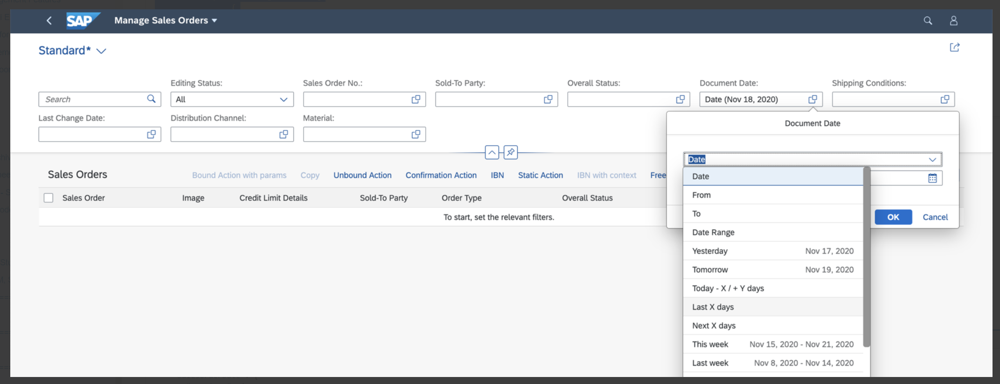

Enabling Semantic Date Range on Filter Bar
Enabling Semantic Date Range on Filter Bar
For
a filter field of type Date, the date picker is set by
default in the
filter bar.
However,
if the useDateRange is configured as true in the
manifest file, the semantic date range control is rendered on the filter
bar.
Enable date range filter with all default range types
"sap.ui.generic.app": {
“pages”: {
"ListReport|SEPMRA_C_PD_Product: {
“component”: {
"settings" : {
"filterSettings": {
"dateSettings":{
"useDateRange": true
}
}
}
}
}
This date range shows all the default settings listed in the Sample Posting Date.
The
useDateRange: true setting and the custom date range
implementation are mutually exclusive. You can modify the default date range options
by setting useDateRange:false as shown in below sample code and by
specifying the required options.
"sap.ui.generic.app": {
“pages”: {
“component”: {
"settings" : {
...
"filterSettings": {
"dateSettings":{
"selectedValues": "DAYS,WEEK,MONTH,DATERANGE,QUARTER,YEAR",
"fields": {
"DateProperty1": {
"selectedValues": "TOMORROW,NEXT,LASTYEAR,LAST2WEEKS,LAST3WEEKS,LAST4WEEKS,LAST5WEEKS,YEARTODATE,QUARTER1,QUARTER2,QUARTER3,QUARTER4",
"exclude": true
},
"DateProperty2": {
"customDateRangeImplementation": "SOMULTIENTITY.ext.controller.customDateRangeType",
"selectedValues": "FROM,TO,DAYS,WEEK,MONTH,DATERANGE,TODAY,TOMORROW,YEAR,YESTERDAY",
"exclude": true
},
"DateProperty3": {
"selectedValues": "YESTERDAY",
"exclude": false
}
}
}
}
}
}
}
The following types of settings exist, either at
property level or at default level, under dateSettings:
-
customDateRangeImplementationproperty: This property references a JS class, which you use to modify the date range value list. You can either remove standard data range values or add custom values. -
selectedValuesandexcludeproperties: TheSelectedValuesproperty is a set of standard date range values that you want to include or exclude. Theexcludeproperty is set toTrueby default. This means excluding all values given asselectedValuesfrom the list of date range filters. If theexcludeproperty is set toFalse, the application shows only selected values in the list of date range filters.-
If you make both of the settings mentioned above, the
customDateRangeImplementationproperty takes precedence over theselectedValuesandexcludeproperties.Suppose we have 5 date filters, namely, DateProperty1, DateProperty2, DateProperty3, DateProperty4, and DateProperty5. As shown in the Sample Code: useDateRange, DateProperty1, DateProperty2, and DateProperty3 take the settings defined for the respective properties, whereas DateProperty4 and DateProperty5 take the default
SelectedValuessettings one level above the field specific configuration. -
If you define the semantic date range feature by providing specific fields, you cannot render the fields from the navigation property of the leading entity set as a semantic date range in the filter bar. This feature is not yet supported.
-
Excluding Certain Date Range Types
You can use the filter settings to include and exclude specific
date range values.
Example 1: If you want to remove Today from the date range, refer to the sample code below:
filterSettings: {
dateSettings: { //Settings which will be applied for all the properties in the filter which are of type sap:date & support range filtering
useDateRange: false //Default value of the property is false. If set to true all date types will get default date ranges. Set to true all other date settings are ignored
fields: {
"LastUpdatedDate": {
//Override for a specific property of type sap:date LastUpdatedDate. This is the most simplest way of removing selected values
// from the standard date range. The values which you want to remove or keep needs to be mentioned as selectedValues in a
// comma separated format
selectedValues: "TOMORROW,NEXT,LASTYEAR,LAST2WEEKS,LAST3WEEKS,LAST4WEEKS,LAST5WEEKS,YEARTODATE,QUARTER1,QUARTER2,QUARTER3,QUARTER4",
//Optional property, default value is true. If set to false include selectedValues otherwise exclude
exclude: false
},
"PostingDate": {
//Alternate way of configuring is using the Filter option. Here developer should be able to specify
// the condition specific to each and every value (whether it is a key/category), needs to be excluded
// or included. You could also specify the operator whether it is contains or equal. This configuration
// passed directly to filter bar and therefore anything which could possible in SFB can be configured
// here as well
//Application can use this for more complex and detailed configuration
"filter": [{
path: 'key',
equals: 'TODAY',
exclude: true
} // TODAY filter will be removed
]
},
"CreatedDate": { //Override for a specific property of type sap:date CreatedDate
//Property holds a reference to a JS class using which App developer can modify the date range value list (can remove standard or
//add custom values). App developer should configure either customDateRangeImplementation or filter or selectedValues & exclude property.
//In case someone configures all four, the priority will be given to customDateRangeImplementation, next priority for filter property
//and the lowest priority will be for selectedValues & exclude (modeled properties) properties
customDateRangeImplementation: "fin.co.statisticalkeyfigure.whereused.lib.CustomDateRangeType",
}
}
}
}
Example 2: If you want include Today and exclude Today -X/+Y Days, refer to the sample code below:
"filter": [{
"path": "key",
"equals": "TODAY",
"exclude": false
},
{
"path": "key",
"equals": "TODAYFROMTO",
"exclude": true
}
]
//
ThecustomDateRangeImplementation setting takes priority
followed by filter and selectedValues when
excluding date range types.
Using the DateRangeType Category
DateRangeType category contains group of
DateRangeType keys. You can use category to remove all keys
in that category.
For example, DateRangeType category
DYNAMIC.DATE contains different keys such as
TO and FROM,
DYNAMIC.DATE.INT category contains keys such as
NEXTDAYS and LASTDAYS, and
DYNAMIC category includes both categories
DYNAMIC.DATE and DYNAMIC.DATE.INT.
"filter": [{
"path": "category",
"contains": "FIXED",
"exclude": true
}]
// this will remove all the keys under the category which "contains" FIXEDFor a filter field of type Date, the date picker is set by default in the filter bar. You can replace it with a date range by making the following code changes in the manifest file:
Enable date range filter with all default range types
{
"sap.ui5": {
"routing": {
"targets": {
"SalesOrderManageList": {
"type": "Component",
"id": "SalesOrderManageList",
"name": "sap.fe.templates.ListReport",
"options": {
"settings": {
"entitySet": "SalesOrderManage",
"controlConfiguration": {
"@com.sap.vocabularies.UI.v1.SelectionFields": {
"useSemanticDateRange": false
}
}
}
}
}
}
}
}
}Excluding Certain Date Range Types
You can use the operatorConfiguration settings to include and exclude specific date range values. Applications can
use this for more complex and detailed configuration.
-
Example 1
To remove "Today" from the date range, proceed as shown in the sample code below:
"filterFields": { "SalesOrderDate": { "settings": { "operatorConfiguration": [ { "path": "key", "equals": "TODAY", "exclude": true } // TODAY filter will be removed ] } } }The result can be seen in the screenshot:
 -
Example 2
To include "Today" and exclude "Today -X/+Y Days", proceed as shown in the sample code below:
"filterFields": { "SalesOrderDate": { "settings": { "operatorConfiguration": [ { "path": "key", "equals": "TODAY", "exclude": false }, { "path": "key", "equals": "TODAYXYDAYS", "exclude": true } ] } } }The result can be seen in the screenshot:
Applications can currently only use the
operatorConfigurationoption to configure the date range operators.
More Information
For more information on configuring filter bar in list report, see Adapting the Filter Bar.
Depending on the use of the date range filter, the default tile type also varies. For more information about creating tiles in case of the semantic date range configuration, see Extending the Bookmark Function to Save Static Tiles to the SAP Fiori Launchpad.